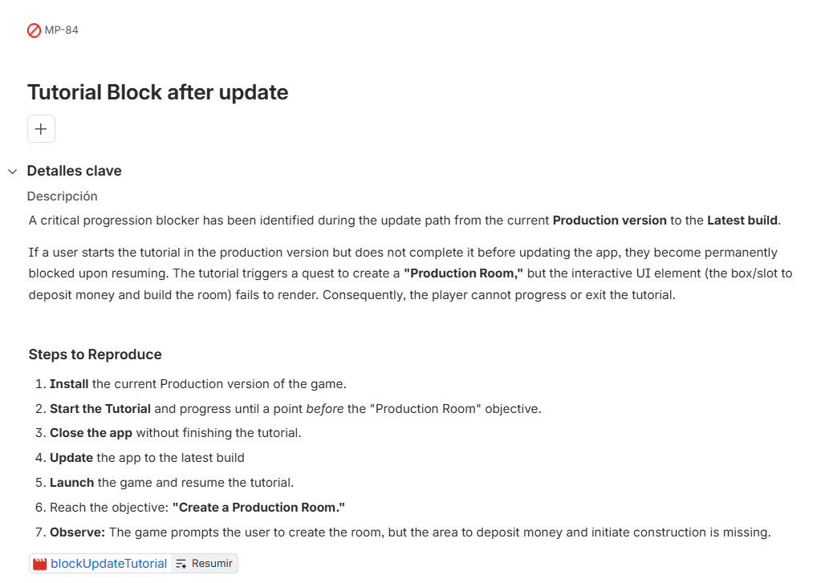

QA Engineer
Mobile Games
Two years testing mobile games end to end. Functional, performance, SDK integrations, device matrices. I build the tools I need when they do not exist.
Dos anos probando juegos moviles de principio a fin. Funcional, rendimiento, integraciones de SDKs, matrices de dispositivos. Construyo las herramientas que necesito cuando no existen.
How I work
Como trabajo
Most of my time goes into validating builds before they ship: functional testing, performance, SDK integrations for analytics and advertising, localisation, and a fair amount of ADB work. I use Jira daily and I am comfortable reading logcat for what it actually tells you, not just copying the stack trace into a ticket.
I think a QA engineer who understands why something breaks is a lot more useful to a dev team than one who only reports that it broke. Bug reports should give developers something actionable, not just a description of what they can already see on screen.
I also built GamePerf, a desktop tool for measuring mobile game performance, because the existing options either cost too much or required modifying the game. It is open source and I use it at work.
La mayor parte del tiempo la paso validando builds antes de que salgan a produccion: pruebas funcionales, rendimiento, integraciones de SDKs de analitica y publicidad, localizacion, y bastante trabajo con ADB. Uso Jira a diario y me manejo bien leyendo logcat por lo que realmente dice, no solo copiando el stack trace en un ticket.
Creo que un QA que entiende por que falla algo es mucho mas util para un equipo de desarrollo que uno que solo reporta que ha fallado. Los informes de bugs tienen que darle al desarrollador algo concreto con lo que trabajar, no solo una descripcion de lo que ya puede ver en pantalla.
Tambien construi GamePerf, una herramienta de escritorio para medir el rendimiento de juegos moviles, porque las opciones que existian o eran demasiado caras o requerían modificar el juego. Es codigo abierto y la uso en el trabajo.
Selected work
Proyectos destacados
GamePerf Desktop
A desktop tool for measuring mobile game performance without scripts, terminals, or modifying the game. Connect a phone, press start, get a report with FPS, CPU, memory, temperature, GPU usage, network bandwidth, and a gameplay video synced to the metrics timeline.
Herramienta de escritorio para medir el rendimiento de juegos moviles sin scripts, terminal ni modificar el juego. Conectas el movil, le das a empezar, y obtienes un informe con FPS, CPU, memoria, temperatura, uso de GPU, ancho de banda y un video del gameplay sincronizado con la linea de tiempo de metricas.
- Automatic detection of ads, IAP, and loading screens so FPS averages reflect actual gameplay, not SDK overhead
- Deteccion automatica de anuncios, IAP y pantallas de carga para que las medias de FPS reflejen el juego real, no los SDKs
- GPU usage without root on Mali and Adreno chipsets via kernel sysfs, with graceful fallback on unsupported devices
- Uso de GPU sin root en chipsets Mali y Adreno via kernel sysfs, con fallback en dispositivos no compatibles
- Wake lock monitoring against Google Play Vitals 2024 thresholds to catch misconfigured analytics SDKs before they hurt store ranking
- Monitorizacion de wake locks segun los umbrales de Google Play Vitals 2024 para detectar SDKs de analitica mal configurados
- Game phase detection for Unity and Unreal by reading scene names from logcat with zero instrumentation required
- Deteccion de fases de juego en Unity y Unreal leyendo nombres de escena del logcat, sin instrumentacion
- Session export as a self-contained .gameperf file and built-in side-by-side session comparison
- Exportacion de sesiones como archivo .gameperf autocontenido y comparador integrado de dos sesiones
- 300+ tests, CI and release pipelines building Mac, Windows and Linux installers in parallel
- 300+ tests, pipelines de CI y release construyendo instaladores para Mac, Windows y Linux en paralelo
View on GitHubVer en GitHub
Example bug report
Ejemplo de informe de bug
Real bug filed during regression testing of a mobile game update path. Company and project names have been anonymised.
Bug real reportado durante las pruebas de regresion del flujo de actualizacion de un juego movil. El nombre del proyecto ha sido anonimizado.
A critical progression blocker identified in the update path from Production to the latest build. If a user starts the tutorial in the production version but does not complete it before updating, they become permanently blocked on resume. The tutorial triggers a quest to create a Production Room, but the interactive UI element to deposit money and build the room fails to render entirely.
Bloqueo critico de progresion en el flujo de actualizacion de la version de Produccion a la ultima build. Si un usuario inicia el tutorial en la version de produccion pero no lo completa antes de actualizar, queda bloqueado de forma permanente al retomarlo. El tutorial activa un objetivo para crear una Sala de Produccion, pero el elemento interactivo de UI para depositar dinero y construir la sala no se renderiza.
- Install the current Production version of the game.
- Instalar la version de Produccion actual del juego.
- Start the tutorial and progress until just before the "Production Room" objective.
- Iniciar el tutorial y avanzar hasta justo antes del objetivo "Sala de Produccion".
- Close the app without finishing the tutorial.
- Cerrar la app sin finalizar el tutorial.
- Update the app to the latest build.
- Actualizar la app a la ultima build.
- Launch the game and resume the tutorial.
- Abrir el juego y retomar el tutorial.
- Reach the "Create a Production Room" objective.
- Llegar al objetivo "Crear una Sala de Produccion".
- Observe: the game prompts the user to create the room, but the deposit area and build button are missing.
- Observar: el juego pide al usuario que cree la sala, pero el area de deposito y el boton de construccion no aparecen.
The interactive slot to deposit money and initiate construction renders correctly regardless of which app version the tutorial was originally started on. The player can complete the objective and continue.
El slot interactivo para depositar dinero e iniciar la construccion se renderiza correctamente independientemente de en que version se inicio el tutorial. El jugador puede completar el objetivo y continuar.
The deposit area and build button do not render. The player is permanently stuck with no way to progress or exit the tutorial. The game is unplayable from this state.
El area de deposito y el boton de construccion no se renderizan. El jugador queda bloqueado de forma permanente sin posibilidad de avanzar ni salir del tutorial. El juego queda inutilizable.
N/A - device wiped before log extraction was performed.
N/A - el dispositivo fue restablecido antes de extraer el log.

Jira ticket MP-84. Labels: blockUpdateTutorial.
Ticket de Jira MP-84. Etiquetas: blockUpdateTutorial.
Tools and skills
Herramientas y habilidades
Testing
Testing
- Functional testing
- Pruebas funcionales
- Regression testing
- Pruebas de regresion
- Performance testing
- Pruebas de rendimiento
- Device matrix
- Matriz de dispositivos
- Localisation (LQA)
- Localizacion (LQA)
Tools
- Jira
- ADB / logcat
- Android Studio
- Git / GitHub
- Charles Proxy
SDKs
- Singular
- AppsFlyer
- Firebase
- AdMob / MAX
- Google Play Vitals
Platforms
Plataformas
- Android 5 to 16
- iOS 14+
- Unity
- Unreal Engine
Background
Trayectoria
QA Engineer
2024 — presentactualidadMobile games QA at a publisher. Responsible for validating builds across functional, performance, and integration dimensions before each release. Daily work with ADB, Jira, device matrices, and SDK verification including analytics, advertising, and billing integrations.
QA de juegos moviles en un publisher. Responsable de validar builds en los ambitos funcional, de rendimiento y de integraciones antes de cada lanzamiento. Trabajo diario con ADB, Jira, matrices de dispositivos y verificacion de SDKs de analitica, publicidad y facturacion.
Let's talk
Hablamos
Looking for QA roles in games or adjacent industries. If you are working on something interesting, I would like to hear about it.
Busco posiciones de QA en videojuegos o sectores relacionados. Si estais trabajando en algo interesante, me encantaria escucharos.